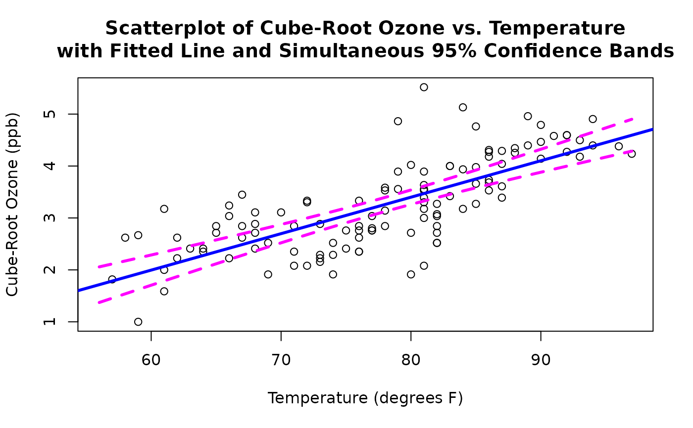

predict.RdThe EnvStats function predict is a generic function for
predictions from the results of various model fitting functions.
The function invokes particular methods which
depend on the class of the first argument.
The EnvStats function predict.default simply calls the R generic
function predict.
The EnvStats functions predict and predict.default have been
created in order to comply with CRAN policies, because EnvStats contains a
modified version of the R function predict.lm.
predict(object, ...)
# S3 method for default
predict(object, ...)a model object for which prediction is desired.
Further arguments passed to or from other methods. See the R help file for
predict for more information.
See the R help file for predict.
See the R help file for predict.
Chambers, J.M., and Hastie, T.J., eds. (1992). Statistical Models in S. Chapman and Hall/CRC, Boca Raton, FL.
R help file for predict,
predict.lm.
# Using the data from the built-in data frame Air.df,
# fit the cube-root of ozone as a function of temperature,
# then compute predicted values for ozone at 70 and 90 degrees F,
# along with the standard errors of these predicted values.
# First look at the data
#-----------------------
with(Air.df,
plot(temperature, ozone, xlab = "Temperature (degrees F)",
ylab = "Cube-Root Ozone (ppb)"))
# Now create the lm object
#-------------------------
ozone.fit <- lm(ozone ~ temperature, data = Air.df)
# Now get predicted values and CIs at 70 and 90 degrees.
# Note the presence of the last component called n.coefs.
#--------------------------------------------------------
predict.list <- predict(ozone.fit,
newdata = data.frame(temperature = c(70, 90)), se.fit = TRUE)
predict.list
#> $fit
#> 1 2
#> 2.697810 4.101808
#>
#> $se.fit
#> 1 2
#> 0.07134554 0.08921071
#>
#> $df
#> [1] 114
#>
#> $residual.scale
#> [1] 0.5903046
#>
#> $n.coefs
#> [1] 2
#>
#$fit
# 1 2
#2.697810 4.101808
#
#$se.fit
# 1 2
#0.07134554 0.08921071
#
#$df
#[1] 114
#
#$residual.scale
#[1] 0.5903046
#
#$n.coefs
#[1] 2
#----------
#Continuing with the above example, create a scatterplot of
# cube-root ozone vs. temperature, and add the fitted line
# along with simultaneous 95% confidence bands.
with(Air.df,
plot(temperature, ozone, xlab = "Temperature (degrees F)",
ylab = "Cube-Root Ozone (ppb)"))
abline(ozone.fit, lwd = 3, col = "blue")
new.temp <- with(Air.df,
seq(min(temperature), max(temperature), length = 100))
predict.list <- predict(ozone.fit,
newdata = data.frame(temperature = new.temp),
se.fit = TRUE)
ci.ozone <- pointwise(predict.list, coverage = 0.95,
simultaneous = TRUE)
lines(new.temp, ci.ozone$lower, lty = 2, lwd = 3, col = "magenta")
lines(new.temp, ci.ozone$upper, lty = 2, lwd = 3, col = "magenta")
title(main=paste("Scatterplot of Cube-Root Ozone vs. Temperature",
"with Fitted Line and Simultaneous 95% Confidence Bands",
sep="\n"))

#----------
# Clean up
#---------
rm(ozone.fit, predict.list, new.temp, ci.ozone)
graphics.off()